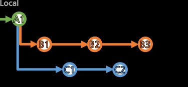

[cherry-pick]

특정 커밋들의 복제본을 추가한다.
git merge가 특정 커밋을 지정하더라도
공통 조상 이후부터 해당 커밋까지 전체의 흐름을 복제하여 병합 커밋을 생성한다면,
git cherry-pick은 특정 커밋들만을 복제하여 병합 커밋을 생성할 수 있다.
> git cherry-pick 복제할_커밋들...
공백을 사이에 두고 여러 커밋ID를 선택할 수도 있고,
> git cherry-pick 옛날_커밋ID..최근_커밋ID
공백 없이 ID..ID로, 연속 구간을 선택할 수 있다.
시간상 왼쪽이 예전 것, 오른쪽이 최근 것을 적는다.
[,) 형태로, 옛날_커밋ID는 포함하지만, 최근_커밋ID는 포함하지 않는다(딱 그 전까지만 포함시킨다).
당연히 cherry-pick도 충돌(conflict)이 발생할 수 있다.
git add등으로 수정 후, git cherry-pick --continue로 완료시킨다.
조율될 수도 있고, 양자택일에 따라 기존 작업 내용을 버리거나, 가져올 내용이 없어져 커밋을 생성하지 않기도 한다.
merge 커밋을 복제해 오려면 추가적인 옵션이 필요하다.
> git log
commit 7651d26b91fac3fa0a13cbaca5fd2d249585f91a (HEAD -> a01, origin/a01)
Merge: 54cd13d aa4b9a1<---- 순서 확인
Author: USER <email@address.com>
Date: EEE MMM dd HH:mm:ss yyyy +0900
Merge remote-tracking branch 'refs/remotes/origin/a01' into a01
...
log를 통해 Merge: 부분의 순서를 확인한다.
> git cherry-pick -m 순서(1부터) 복제할_병합커밋
특정 순서에서 진행된 것처럼 작업 내용을 복제한다.
(해당 순서를 제외한 나머지 순서의 작업 내용들을 적용한다)